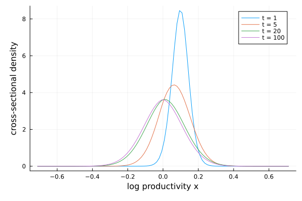

Computing distributions (Kolmogorov forward)
The previous tutorial computed expectations, which march backward in time. Cross-sectional distributions march forward: given today's distribution of income, wealth, or firm size across agents, where is the distribution next year, and where does it settle in the long run?
The mathematical problem is to compute the distribution $g(x, t)$ of a known Markov process $x_t$. This distribution solves the Kolmogorov forward (Fokker-Planck) equation
\[\partial_t g = \mathbb{A}^* g,\]
where $\mathbb{A}^*$ is the adjoint of the infinitesimal generator. For instance, if $x_t$ is the diffusion
\[dx_t = \mu(x_t) \, dt + \sigma(x_t) \, dZ_t,\]
then the PDE is
\[\partial_t g = -\partial_x\left(\mu(x) g\right) + \frac{1}{2}\partial_{xx}\left(\sigma(x)^2 g\right).\]
InfinitesimalGenerators.jl solves this PDE on a finite grid. First construct a process object; the package then builds the generator matrix $\mathbb{A}$ on that grid. Take the same Ornstein-Uhlenbeck process as before, now interpreted as the log productivity of a cross-section of firms:
using InfinitesimalGenerators, LinearAlgebra
κ, σ = 0.1, 0.05
X = OrnsteinUhlenbeck(; xbar = 0.0, κ = κ, σ = σ)
xs = only(state_space(X))
𝔸 = generator(X)100×100 LinearAlgebra.Tridiagonal{Float64, Vector{Float64}}:
-11.005 11.005 ⋅ … ⋅ ⋅ ⋅
6.05498 -16.96 10.905 ⋅ ⋅ ⋅
⋅ 6.05498 -16.86 ⋅ ⋅ ⋅
⋅ ⋅ 6.05498 ⋅ ⋅ ⋅
⋅ ⋅ ⋅ ⋅ ⋅ ⋅
⋅ ⋅ ⋅ … ⋅ ⋅ ⋅
⋅ ⋅ ⋅ ⋅ ⋅ ⋅
⋅ ⋅ ⋅ ⋅ ⋅ ⋅
⋅ ⋅ ⋅ ⋅ ⋅ ⋅
⋅ ⋅ ⋅ ⋅ ⋅ ⋅
⋮ ⋱
⋅ ⋅ ⋅ ⋅ ⋅ ⋅
⋅ ⋅ ⋅ ⋅ ⋅ ⋅
⋅ ⋅ ⋅ ⋅ ⋅ ⋅
⋅ ⋅ ⋅ ⋅ ⋅ ⋅
⋅ ⋅ ⋅ … ⋅ ⋅ ⋅
⋅ ⋅ ⋅ 6.05498 ⋅ ⋅
⋅ ⋅ ⋅ -16.86 6.05498 ⋅
⋅ ⋅ ⋅ 10.905 -16.96 6.05498
⋅ ⋅ ⋅ ⋅ 11.005 -11.005On the grid, $g_t$ is the vector of probability masses at the grid points. The adjoint operator becomes the transpose of the generator matrix, so the forward PDE becomes the linear ODE
\[\partial_t g_t = \mathbb{A}' g_t.\]
Marching forward with implicit Euler gives
\[g_{t + dt} = (I - dt \, \mathbb{A}')^{-1} g_t.\]
This implicit step preserves the probabilistic interpretation. Since $\mathbb{A}$ is a valid Markov generator, $I - dt \, \mathbb{A}'$ is an M-matrix for any $dt > 0$: its inverse is non-negative, so non-negative masses remain non-negative. And because rows of $\mathbb{A}$ sum to zero, total mass remains one.
Here is the computation starting every firm at the same productivity — a point mass one standard deviation above the mean — and watching the cross-section spread out and recenter (each date's distribution is stored in gs for the checks below):
using Plots
dt = 0.1
g0 = zeros(length(xs))
g0[findmin(abs.(xs .- σ / sqrt(2κ)))[2]] = 1.0
gs = Dict()
Δx = step(xs)
plot(xlabel = "log productivity x", ylabel = "cross-sectional density")
for T in (1, 5, 20, 100)
gT = copy(g0)
for _ in 1:round(Int, T / dt)
gT .= (I - dt * 𝔸') \ gT
end
gs[T] = gT
plot!(xs, gT ./ Δx; label = "t = $T")
end
current()
The division by Δx converts masses to a density for plotting: g sums to one without grid weights, so the density at a grid point is the mass divided by the cell width. On this uniform grid the two differ only by a constant factor; on a non-uniform grid (as in Application to a consumption-saving problem) the distinction matters, since raw masses would trace the grid spacing rather than the shape of the distribution.
The discretized process is a well-defined Markov chain — rows of $\mathbb{A}$ sum to zero and off-diagonals are non-negative — so the masses stay non-negative and sum to one at every date, with no renormalization needed:
sum(gs[100])1.0000000000000457For the Ornstein–Uhlenbeck process the transition distribution is known in closed form — Gaussian with mean $e^{-\kappa t} x_0$ and variance $\frac{\sigma^2}{2\kappa}(1 - e^{-2\kappa t})$ — which checks the discretization at, say, $t = 5$:
t, x0 = 5, xs[findmax(g0)[2]]
gt = gs[t]
mean_t = sum(gt .* xs)
var_t = sum(gt .* xs .^ 2) - mean_t^2
(; mean_t, closed_mean = exp(-κ * t) * x0,
var_t, closed_var = σ^2 / (2κ) * (1 - exp(-2κ * t)))(mean_t = 0.06552258934933333, closed_mean = 0.06536006868699905, var_t = 0.008298441261350646, closed_var = 0.007901506985356972)The mean is essentially exact: the upwind scheme discretizes the drift $\kappa(\bar x - x)$ without bias. The variance is a few percent too high — upwinding adds a little numerical diffusion, the price paid for a discretization that is guaranteed to be a well-defined Markov chain (masses stay non-negative no matter how coarse the grid). Refining the grid shrinks the gap.
The exact finite-step update is $g_{t+dt} = e^{dt \, \mathbb{A}'} \, g_t$. The matrix $e^{dt \, \mathbb{A}'}$ is the Markov transition matrix acting on distributions: its entries are non-negative and each column sums to one.
For large sparse grids, forming this update is usually unattractive, since the matrix exponential is expensive and generally dense. The implicit step keeps the useful stochastic-matrix property without forming that exponential:
\[(I - dt \, \mathbb{A}')^{-1} = \frac{1}{dt} \int_0^\infty e^{-s/dt} \, e^{\mathbb{A}' s} \, ds = E\left[e^{\mathbb{A}' \tau}\right].\]
The right-hand side is an average of exact transition matrices over an exponential horizon $\tau$ with mean $dt$. Hence the implicit update preserves non-negative masses and total probability for every $dt$; the explicit step $I + dt \, \mathbb{A}'$ does so only under the CFL restriction $dt \leq \min_i 1/(-\mathbb{A}_{ii})$.
The stationary distribution by hand
As $t \to \infty$ the distribution converges to the stationary distribution, the fixed point of the forward equation:
\[\mathbb{A}' g = 0, \qquad \textstyle\sum_i g_i = 1.\]
That is a linear system: g is the null vector of the transposed generator, normalized to sum to one. By hand, replace one (redundant) row of $\mathbb{A}'$ with the normalization:
B = Matrix(𝔸')
B[end, :] .= 1.0
g∞ = B \ [zeros(length(xs) - 1); 1.0]For the Ornstein–Uhlenbeck process this should be the $N(0, \sigma^2/2\kappa)$ density. The total variation distance — the share of probability mass the discretized chain misplaces relative to the exact distribution:
s2∞ = σ^2 / (2κ)
closed∞ = @. exp(-xs^2 / (2s2∞)) / sqrt(2π * s2∞)
sum(abs, g∞ - closed∞ .* Δx) / 20.010647801498766814About one percent — upwinding's numerical diffusion again, as in the variance check above — and it halves with each doubling of the grid.
... and with the helper
stationary_distribution performs this computation for any process in the package (using a robust eigenvalue method rather than the row-replacement trick, and reshaping the result to the shape of the state space for multivariate processes):
g = stationary_distribution(X)
maximum(abs, g - g∞)3.2612801348363973e-16Two variations are worth knowing:
- Convergence check. The evolved distribution approaches the stationary one at the speed of mean reversion:
maximum(abs, gs[100] - g)is of the order of the autocorrelation $e^{-\kappa \cdot 100} \approx 5 \times 10^{-5}$, and by $t = 300$ the two agree to machine precision. - Death and rebirth.
stationary_distribution(X; δ = δ, rebirth = ψ)computes the stationary distribution when agents die at rate $\delta$ and are reborn with distribution $\psi$ — the resolvent $(\delta I - \mathbb{A}')^{-1} \delta \psi$ — which is the relevant object in perpetual-youth and firm-entry models.